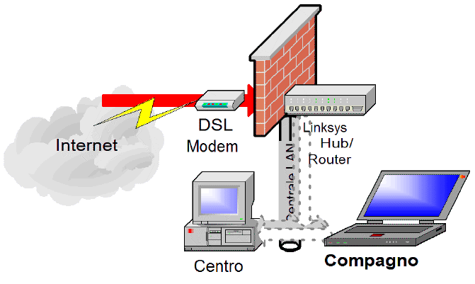

Incident Report X040705
Compagno Attack Surface
DSL Internet Penetration
X040705C>
2022-05-06
-12:10 -0700
|
|
Incident Report X040705 |
|
The following diagram illustrates the path for the DSL Internet penetration check. The test is for unsolicited arrival of material from the Internet via the DSL connection. The remote sender is not responding to a request from a local computer.
This check confirmed that the surface presented to the internet is determined by the DSL Modem and the LinkSys router and residential firewall. There is no difference in the result of the tests on Centro (which has no personal firewall) and on Compagno (which has ZoneAlarm Pro 5.0).

In this test configuration, it is not established which countermeasures are provided by the DSL Modem (or even the ISP) and which countermeasures are provided by the Hub/Router.
The following tests were performed from Centro and from Compagno. There is no difference in results on either computer.
The basic test was accomplished using the ShieldsUp! site:
The text below might uniquely
identify you on the InternetYour Internet connection's IP address is uniquely associated with the following "machine name":
67-42-100-239.tukw.qwest.net The string of text above is known as your Internet connection's "reverse DNS." The end of the string is probably a domain name related to your ISP. This will be common to all customers of this ISP. But the beginning of the string uniquely identifies your Internet connection. The question is: Is the beginning of the string an "account ID" that is uniquely and permanently tied to you, or is it merely related to your current public IP address and thus subject to change?
The information is from the DHCP-assigned IP address that my ISP assigned to my DSL connection point. Although the IP Address 67.42.100.239 is changed periodically, its key feature is that it is essentially the temporary address of the WAN side of my DSL modem. It is unrelated to any address of my local machines.
My computers are part of a workgroup, and there is file and printer sharing among the local machines of the workgroup. None of those facilities are visible to the Internet:
Shields UP! is checking YOUR computer's Internet
connection security . . . currently located at IP:
67.42.100.239
Please Stand By. . .
Attempting connection to your computer. . .
Shields UP! is now attempting to contact the Hidden Internet Server within your PC. It is likely that no one has told you that your own personal computer may now be functioning as an Internet Server with neither your knowledge nor your permission. And that it may be serving up all or many of your personal files for reading, writing, modification and even deletion by anyone, anywhere, on the Internet!
Preliminary Internet connection refused!
This is extremely favorable for your system's overall Windows File and Printer Sharing security. Most Windows systems, with the Network Neighborhood installed, hold the NetBIOS port 139 wide open to solicit connections from all passing traffic. Either this system has closed this usually-open port, or some equipment or software such as a "firewall" is preventing external connection and has firmly closed the dangerous port 139 to all passersby. (Congratulations!)
Unable to connect with NetBIOS to your computer.
All attempts to get any information from your computer have FAILED. (This is very uncommon for a Windows networking-based PC.) Relative to vulnerabilities from Windows networking, this computer appears to be VERY SECURE since it is NOT exposing ANY of its internal NetBIOS networking protocol over the Internet.
The standard test for common ports made the following text-version report:
----------------------------------------------------------------------
GRC Port Authority Report created on UTC: 2004-07-28 at 05:34:19
Results from scan of ports: 0, 21-23, 25, 79, 80, 110, 113,
119, 135, 139, 143, 389, 443, 445,
1002, 1024-1030, 1720, 5000
0 Ports Open
25 Ports Closed
1 Ports Stealth
---------------------
26 Ports Tested
NO PORTS were found to be OPEN.
The port found to be STEALTH was: 80
Other than what is listed above, all ports are CLOSED.
TruStealth: FAILED - NOT all tested ports were STEALTH,
- NO unsolicited packets were received,
- A PING REPLY (ICMP Echo) WAS RECEIVED.
----------------------------------------------------------------------The stealth protection of Port 80 is apparently accomplished by the DSL Modem. The LinkSys hub/router is simply not forwarding any UDP or TCP port accesses onto the Centrale SOHO LAN.
The DSL Modem does respond to requests from the SOHO LAN to the URL http://67.42.100.239/
System Firmware Version: 5.5.12-VUE-MSN Firmware Date: Fri Jun 28 22:03:22 2002 DSL Connection Status: Up Line Mode: ANSI T1.413 PVC VPI/VCI: 0/32 Upstream Speed: 256 kbps Downstream Speed: 640 kbps PPP Connection Status: Up NAT IP Address: 67.42.100.239 Encapsulations: PPPoE Sent Packets: 2351118 Received Packets: 2717666 Sent Bytes: 341330292 Received Bytes: 2448276772 LAN IP Address: 192.168.1.1 Subnet Mask: 255.255.255.252 Ethernet Link: Up USB Link: Down MAC Address: 0005D802EC20 DHCP Table
Host IP Host Name Host MAC 192.168.1.2 centrale 00045AE25DAE
On checking all service ports it is established that there is more involved:
---------------------------------------------------------------------- GRC Port Authority Report created on UTC: 2004-07-28 at 05:40:58 Results from scan of ports: 0-1055 1 Ports Open 1054 Ports Closed 1 Ports Stealth --------------------- 1056 Ports Tested The port found to be OPEN was: 20 The port found to be STEALTH was: 80 Other than what is listed above, all ports are CLOSED. TruStealth: FAILED - NOT all tested ports were STEALTH, - NO unsolicited packets were received, - A PING REPLY (ICMP Echo) WAS RECEIVED. ----------------------------------------------------------------------The open port 20 is suspected to be on the DSL modem, since there is no port forwarding at the hub/router and there is no updating from the web permitted at the hub/router.
There are additional tests required for determining what the contribution of the hub/router is to reduction of the attack surface. There are also additional tests required for dealing with malicious routers and local machines.
| You are navigating Orcmid's Lair |
created 2004-07-28-14:26 -0700 (pdt) by orcmid |